builderscon 低温調理肉会 2018 Spring
builderscon 低温調理肉会 2018 Spring
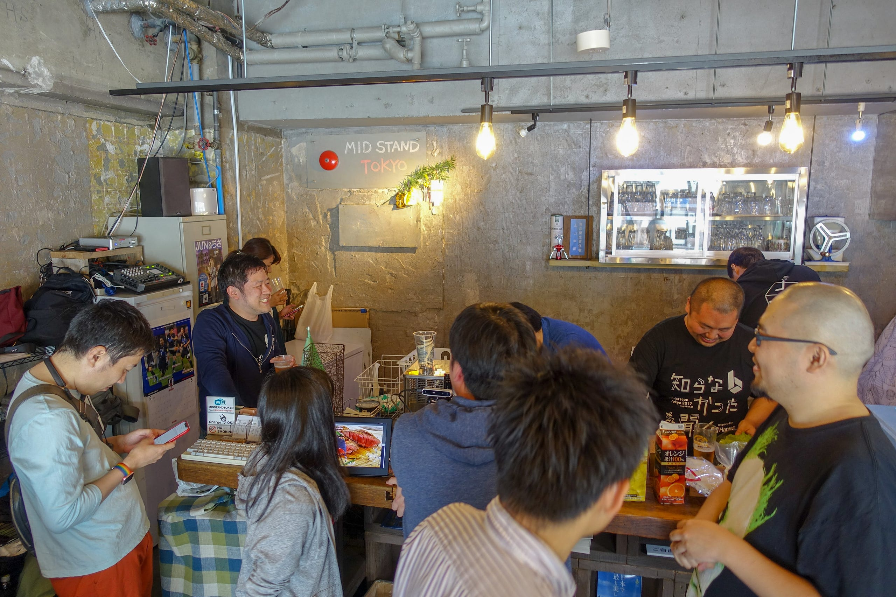
というわけで去る5月12日に2回目となるbuilderscon 低温調理肉会をやってきました。
builderscon tokyo 2018は9/6、9/7、9/8開催予定。CFPは今月末〜来月くらいに開始すると思うので乞うご期待！
Sep 6 (Thu) Sep 7 (Fri) Sep 8 (Sat) @Kyoseikan, Keio University (TBD) In association with Keio University Graduate…builderscon.io
builderscon 低温調理肉会は以下のような感じのイベントです。今回2回目
本会の主目的は「主宰の牧が大量に肉を調理したい欲求を叶えること」ですが、ついでにbuilderscon tokyo 2018 (https://builderscon.io/tokyo/2018) の開催に向けて鋭気を養う目的もあります。
会場は台所の使い方も分かってるし前回と同じ会場にしようと思ってたんですが、残念ながら閉店してしまったとの事で新しい会場を探しました。今回は神田のMID STAND TOKYOさんを貸していただいて、開催しました。
今回も会場から生ビールを手配してもらい、朝10時くらいからビールクズとなりながら、午後2時くらいまで肉を焼き続けました！
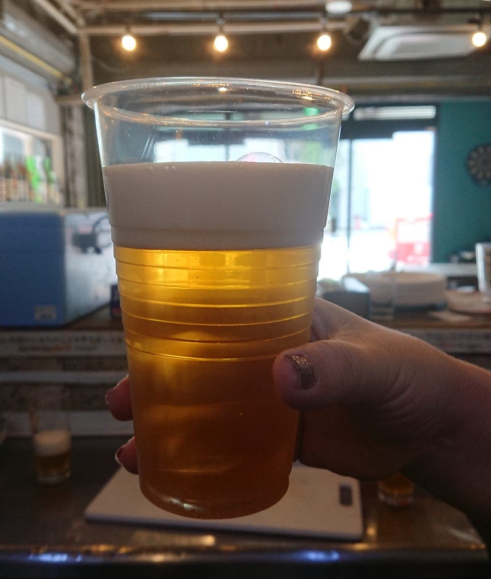
肉はいつもお世話になっている Meatguyから調達。
The Meat Guy 公式サイト。スーパーでは手に入らないお肉・安心安全なお肉を、365日お届けします。www.themeatguy.jp
今回は久しぶりに会えた人もいたり、普段なかなか面と向かって話せない人と出会えたり、初めましての人もいたりで大変有意義な会だった。
今回もanova2台体制でガンガン焼いてきたので、以下どうぞ！
メニュー
鴨胸肉
安定の鴨胸肉。anovaで59℃くらいで4時間しておいて、食べる前にまたanovaで温度をあげて最後に焼き目をつける感じ。
商品説明 日本では合鴨と呼ばれているマグレカナール種のロース肉です。 味が繊細で、特に脂は甘みを感じさせるほどの味とコクがあり、日本料理に特に適しています。 脂身と赤身のバランスがよく、肉質も柔らかいのが特徴です。 召し上がり方…www.themeatguy.jp
今回は前回よりもう少し火を入れて見た。というのも、年末年始に鴨を食べまくった時に生っぽい食感は大分食べる人を選ぶなーと思ったから。自分は好きだけど、このグニグニ感は誰しもが好む感じではないなーと。
そんな感じでちょっと噛みやすくなったけど、水分がもう少しあってもよかったかな、というできになった。
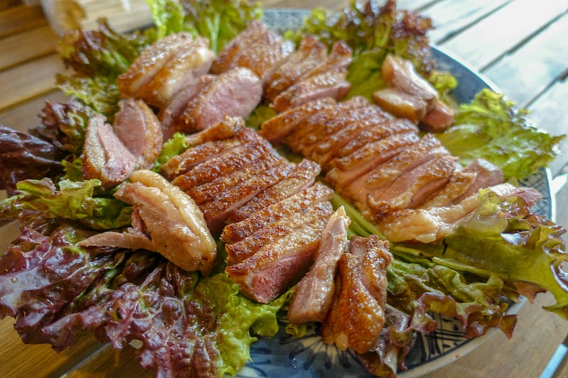
ダチョウ
初めて調理して初めて食べた。うーーーーーん。うまい、が… なんだろう、何の肉かわからないくらい特徴がない… うまみもないわけじゃないが、すごいあっさり。これのベストの食べ方がよくわからない。
商品説明 オーストラリア産の最高級ダチョウ肉（ランプ）。 丁寧に手切りしているので、サイズは多少前後しますが、ステーキカットすれば6-8枚分。ケバブ等にも最適です。 ...www.themeatguy.jp
この人はこのあとデミグラスソースがけバージョンもやってみた。要研究。
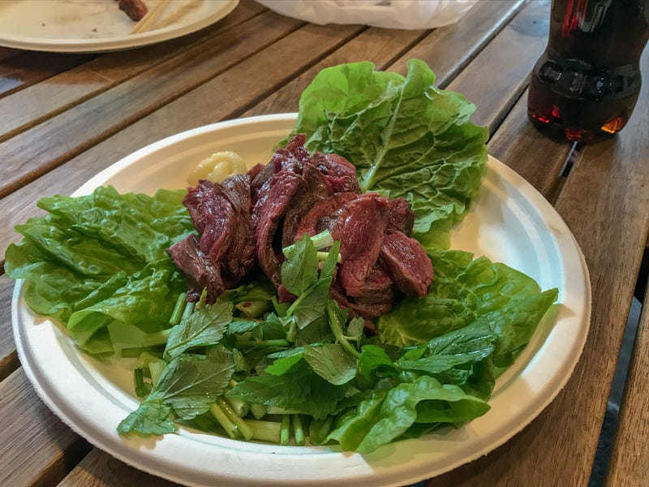
鶏モモ肉タンドリー風
これは妻が作ってくれるタンドリー風チキンをもっとスパイシーにして味を強くしたもの。Meatguyでラムチョップを頼むと必ずついてくるスパイス、パプリカパウダー、カレー粉、ヨーグルト、塩を揉み込んでおいて、一日ほど寝かせておきました。
調理は1時間ほどanovaで59℃でやってから、最後に帳尻合わせのために鍋で軽く煮炒めみたいな感じで仕上げた。
我が家のはもっとおとなしい味なんだけど、スパイシーで良い感じ
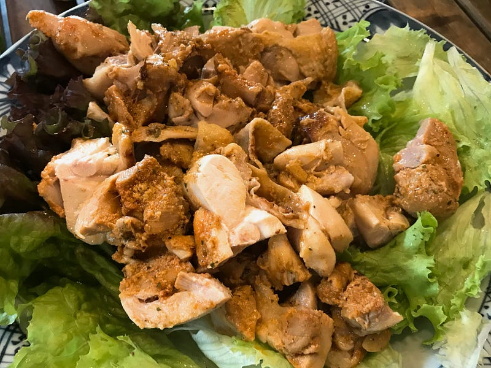
カンガルー肉
前回もやったカンガルー肉。写真が見当たらない！
赤身の肉で、これも前回より若干火を強めに通してみた。前回は血のにおいが強くて、すごい鯨っぽい感じだったんだよね。今回は58℃で1時間ほど。ダチョウよりこっちのほうが個人的には好み。
細かい話は前回のブログを読んで下さい！
牛ヒレ
今回、参加者の中から「もういい年なので、脂身の少ない肉がいいです」という声が聞かれたので、牛ヒレ肉を用意してみた。正直自分は普段ヒレ肉は食べない。クセがなくて柔らかいの牛ヒレ肉の良いところだが、逆に言えば単価も高いのに特におもしろみがない！
ただ、他の人に振る舞うのはまた別問題です。自分でお金払って食べる場合は… ってだけ。
牛ヒレは55℃、1時間程度泳がせてから焼き目をつける。もちろん元から柔らかいのだけど、ぐにょぐにょと柔らかいのではなく、包丁がケーキを切るようにすっと入るようになる。
豚ロース
anovaの実力を一番手軽に感じられるのがやはり豚肉。今回はいつも買っていたお店の「極厚豚ロース」というのがなくなってしまったので一瞬困った。しかしないものは作る、それが俺達技術屋。極厚切りが売ってなければ、ブロックで購入して、極厚切りを自分で作ればいいのだ。
というわけで57.5℃で4時間泳がせて、焼き目をつけて。個人的なおすすめは粒マスタードだけど、とんかつソースやわさび醤油でもうまい。
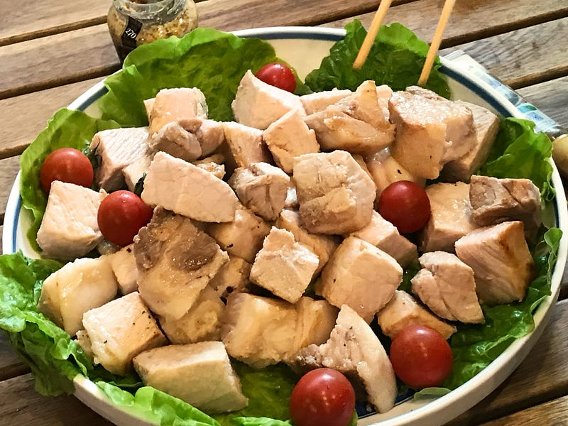
ラムチョップ
俺の中ではキングオブキング。羊肉は香り、柔らかさ、ジューシーな脂身と、とにかくガンガン焼いて食べるのに向いていると思う。
商品説明 ニュージーランド産の少し小ぶりのフレンチラムラック。TheMeatGuyオリジナルのラムラブスパイスミックス付。 フレンチラムラックフレンチラムラックとは、仔羊のロースのあばら骨の付いたものです。 ...www.themeatguy.jp
こちらは4時間57.5℃で泳がせた後、細切りにしてから焼き上げる。以前BBQしてたときは火加減を気にして丸のまま焼いて、そこから切り分けてたんだけど、こっちのほうがはるかに早くできるし、うまい。一部はガーリック味で提供しました。
6ラックも用意したのに、全部一瞬で無くなってびびった。
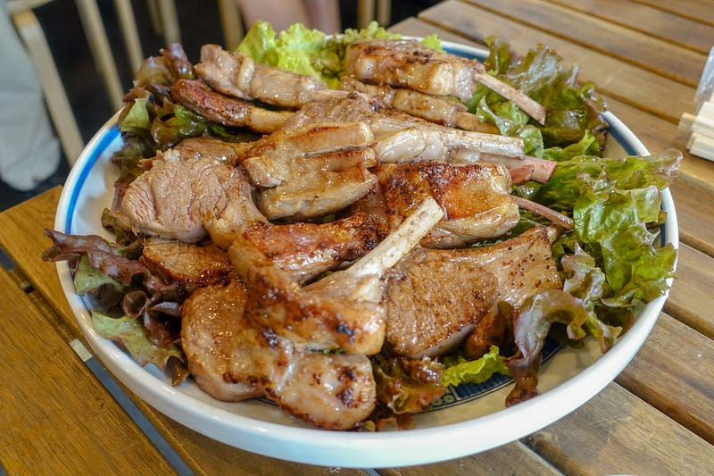
その他
今回は野菜をたくさん持って来てもらえたので、野菜炒め的なものも作った。
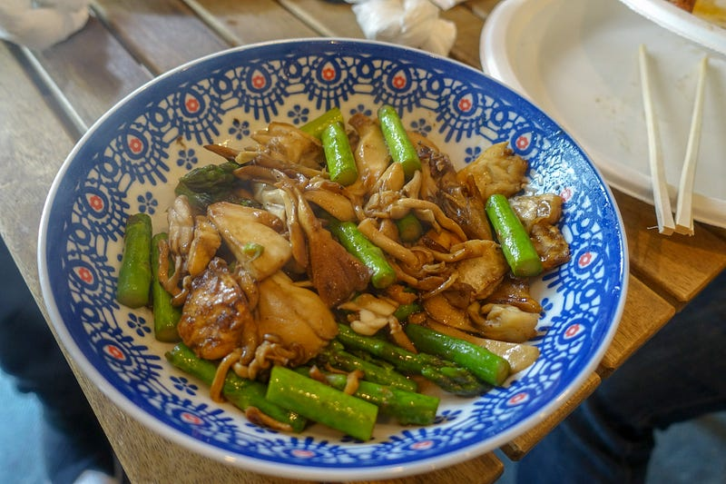
あと、消化を助けるためのキュウリと新タマネギのマリネも作っていった。
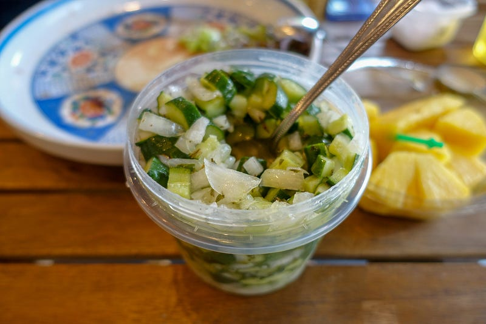
俺が主宰する会の参加者達は皆わかっていて、生とカットのパイナップルが大量に持ち込まれてた（パイナップルは肉の消化を助けます）
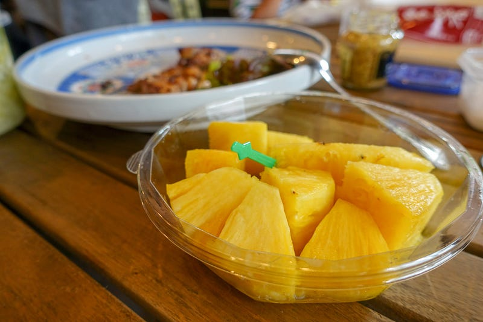
参加者の内の一人は尋常でないものを作っていたり
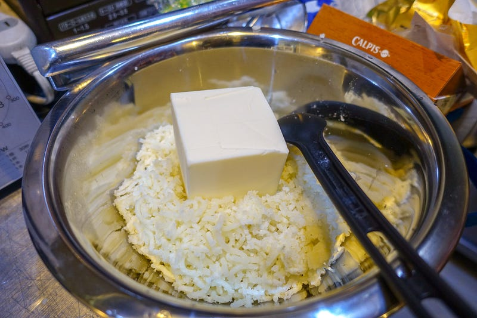
あと不思議な機材のデモなどもありました！
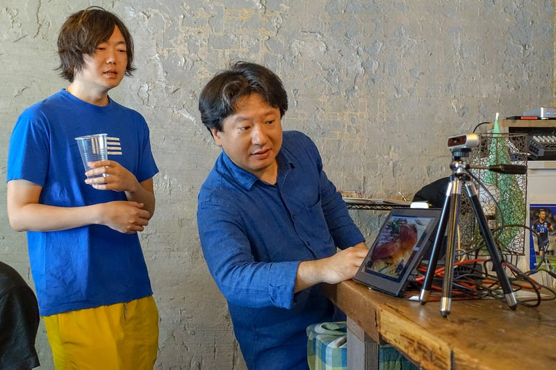
参考URL
The latest Tweets on #builderscon since:2018-05-12 until:2018-05-13. Read what people are saying and join the…twitter.com
今回肉体へのダメージが尋常じゃなくて、40歳だしもうこりゃ真面目に体を鍛えないとカンファレンス運営とかもできないな、と思ったので少しがんばりたいと思いました。
さあ、このあとはbuilderscon tokyo 2018のCfP (トーク公募）が始まりますので、皆さん準備しててください！！！